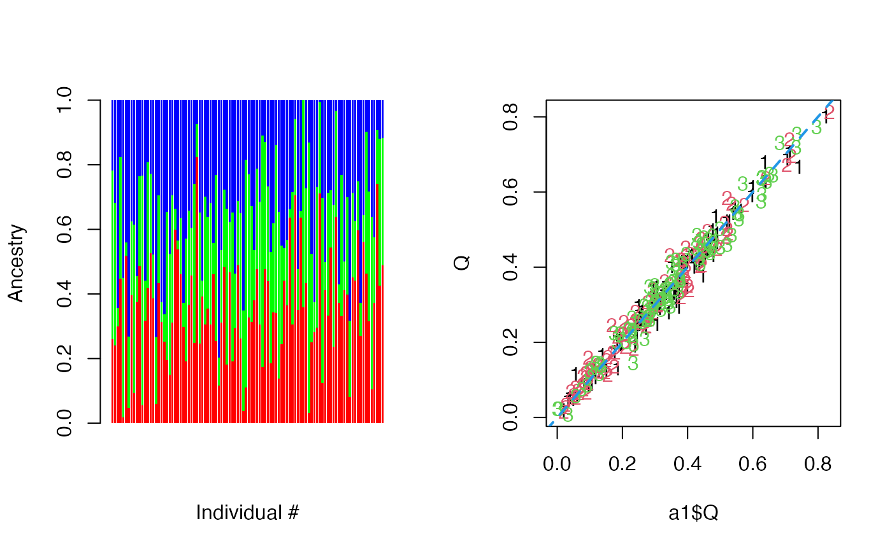

R/Qadmixture_qp.R
Qadmixture.RdGiven n unrelated individuals with m SNP markers, coming from K ancestry populations, the admixture model has parameters (1) Q, an nxK matrix of ancestry proportions for n individuals; (2) P, a Kxm matrix of ancestry population allele freq for m SNPs. The individual sample allele freq is modeled as \(\theta=PQ\) and the genotypes are modeled with a Binomial distribution with probability \(\theta\). Here we assume P is given and try to estimate Q for each individual. An EM algorithm with quasi-Newton acceleration is implemented.
Qadmixture(
G,
P,
pinit = NULL,
Kem = 5,
maxit = 100,
rtol = 1e-07,
trace = FALSE,
...
)genotype matrix of n by m
Kxm matrix of allele freqs for K ancestry populations
list of starting values of Q (nxK ancestry proportions). If not provided, a k-means clustering will be used to provide an intial estimate as starting values.
number of EM iterations within each ECME step
maximum number of iterations
convergence threshold for relative change of log likelihood
whether monitoring convergence
additional inputs passed to kmeans() to compute the initial parameter values
nxK matrix of ancestry proportions
estimated ancestry indicators
sequence of computed log likelihoods over all iterations
X. Wu and B. Wu (2024) Radmixture: an R package for fast and robust likelihood-based estimation of admixture model for global ancestry inference. tech rep.
D.H. Alexander, J. Novembre, and K. Lange (2009) Fast model-based estimation of ancestry in unrelated individuals. Genome Research, 19:1655-1664.
H. Zhou, D.H. Alexander, and K. Lange (2011). A quasi-Newton method for accelerating the convergence of iterative optimization algorithms. Statistics and Computing, 21:261-273.
n=100; m = 1000; K=3; P = t(sapply(1:K, function(j) runif(m)))
Q = matrix(runif(n*K), n,K); Q = Q/rowSums(Q)
tha = Q%*%P; G = matrix(rbinom(n*m, 2, tha), n,m)
a1 = Qadmixture(G,P, trace=TRUE)
#> Initial LLK = -123111.811975104
#> 1: LLK= -123090.983988327, Rel Diff= 0.000169178
#> 2: LLK= -123090.906863067, Rel Diff= 0.000000627
#> 3: LLK= -123090.906849318, Rel Diff= 0.000000000
#> maxIter= 3; maxLLK= -123090.906849318; convDiff= 0.000000000
apply(Q, 2, range); apply(a1$Q, 2, range); cor(Q, a1$Q)
#> [,1] [,2] [,3]
#> [1,] 0.01869338 0.01477371 0.008359884
#> [2,] 0.80026036 0.81218034 0.773950020
#> [,1] [,2] [,3]
#> [1,] 0.01784063 0.02103542 0.0000001
#> [2,] 0.82400253 0.83587194 0.7966986
#> [,1] [,2] [,3]
#> [1,] 0.9864768 -0.5045898 -0.4381645
#> [2,] -0.4951111 0.9854542 -0.5414649
#> [3,] -0.4482741 -0.5264135 0.9849336
table(a1$Cs, apply(Q, 1, which.max))
#>
#> 1 2 3
#> 1 31 2 2
#> 2 0 30 2
#> 3 0 0 33
par(mfrow=c(1,2))
barplot(t(a1$Q), col=rainbow(K), xlab="Individual #", ylab="Ancestry", border=NA)
matplot(a1$Q, Q); abline(0,1, col=K+1, lwd=2, lty=2)

Y = apply(Q, 1, which.max)
ml = nnet::multinom(Y~a1$Q[,-1])
#> # weights: 12 (6 variable)
#> initial value 109.861229
#> iter 10 value 18.952736
#> iter 20 value 15.923460
#> iter 30 value 15.435200
#> iter 40 value 15.390475
#> iter 50 value 15.386439
#> iter 60 value 15.381785
#> iter 70 value 15.379539
#> iter 80 value 15.377711
#> iter 90 value 15.376041
#> iter 100 value 15.375317
#> final value 15.375317
#> stopped after 100 iterations
Yc = apply(ml$fitted, 1, which.max)
table(Y, Yc); mean(Yc!=Y)
#> Yc
#> Y 1 2 3
#> 1 27 2 2
#> 2 2 30 0
#> 3 1 2 34
#> [1] 0.09